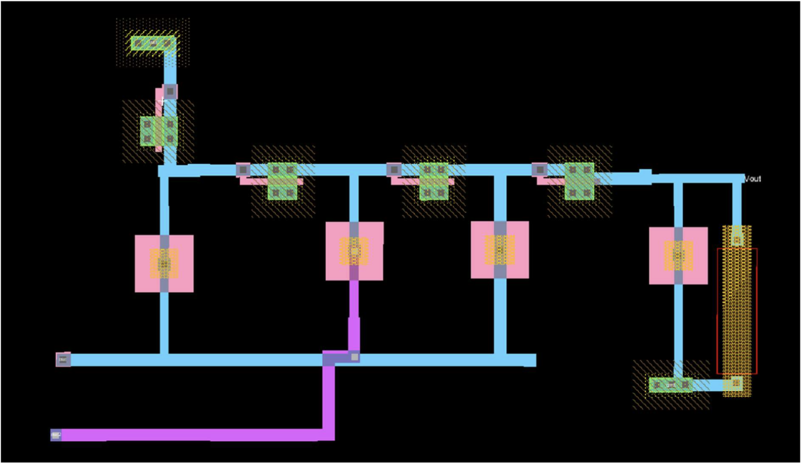

VLSI · Lab 06 / Analog & Power Electronics
DC-DC Converter & Charge Pump
CMOS switched-capacitor converter integrating a five-stage charge pump, ring oscillator and voltage regulation circuit.
Project overview
The Electric VLSI design library contains schematic and layout cells for the five-stage circuit, charge pump, ring oscillator and regulation circuit. The top-level SPICE deck interconnects the five-stage charge pump, oscillator and regulation subcircuits.
Engineering implementation
- Designed and organized transistor-level CMOS subcircuits.
- Integrated a five-stage switched-capacitor voltage conversion circuit with oscillator and regulation blocks.
- Prepared SPICE netlists for the full converter and individual subcircuits.
Results & scope
The source includes circuit designs, transient-analysis directives and simulation logs. Output voltage, efficiency, ripple and silicon performance have not been independently established.
DESIGN OVERVIEW
Circuit architecture

DESIGN ARCHITECTURE
DC supply → Charge pump → Vout
↑ ↓
Ring oscillator ← RegulationConceptual diagram based on source netlist